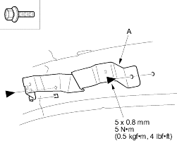

- If necessary, remove the bolts, then remove the grab handle bracket (A).
Fastener Locations
 : Bolt, 2
: Bolt, 2

- Install the headliner in the reverse order of removal and note these items:
- When reinstalling the headliner through the door opening, be careful not to fold or bend it. Also, be careful not to scratch the body.
- If the threads on a visor and grab handle screws are worn out, use an oversized self-tapping ET screw made specifically for this application.
- Check that both sides of the headliner are securely attached to the trim.